Skip
Skip
Skip
Skip
Skip
ไง! ตามมาแล้วเหรอ
ดูท่าทางแล้วเธอคงอยากจะรู้จริงๆ สินะ
ฉันจะช่วยคำนวณราศีจริงของเธอเอง
แต่ก่อนอื่นเลย
ราศีของเธอคือ...

ราศีเมษ

ราศีพฤษภ

ราศีเมถุน

ราศีกรกฎ

ราศีสิงห์

ราศีตุลย์

ราศีพิจิก

ราศีมังกร

ราศีกุมภ์

ราศีมีน
ถ้าอิงแค่ตามวันเกิดอะนะ...
หมู่ดาวที่เราเห็นบนท้องฟ้าเนี่ย...
ยังมีการแบ่งกลุ่มเป็นซีกฟ้าทางเหนือกับซีกฟ้าทางใต้อีกนะ
ซึ่งตำแหน่งและเวลาที่เธออยู่ ณ ตอนนี้ก็มีผลต่อการเห็นดาวพวกนั้นเหมือนกัน
เพราะอย่างนั้นเลยใช้แค่วันเกิดของเธอไม่ได้หรอก
ฉันเลยอยากจะขอข้อมูลเพิ่มเติมหน่อย...
เธอจำเวลาเกิดของตัวเองได้รึเปล่า?
อย่าลืมใส่เวลาเกิดด้วยสิ
ต่อไปก็เป็นข้อมูลเกี่ยวกับสถานที่นะ
ไม่เป็นไรๆ เดี๋ยวฉันจะตั้งค่าเป็นเที่ยงวันให้ก็แล้วกัน
ฉันจะใช้กรุงเทพฯ เป็นตำแหน่งหลักสำหรับการคำนวณนะ
จริงๆ แล้วจักรราศีน่ะ...
ก็คือกลุ่มดาวที่ ณ ตำแหน่งเดียวกับดวงอาทิตย์ในช่วงเวลานั้นๆหรือเรียกว่า ราศีตามสุริยวิถี ยังไงล่ะ!
มาดูกันดีกว่าว่าในช่วงวันเกิดของเธอ
กลุ่มดาวไหนที่อยู่ตรงกับดวงอาทิตย์กันนะ


ราศีตามสุริยวิถีของเธอคือ...
ราศีเมษ
ราศีพฤษภ
ราศีเมถุน
ราศีกรกฎ
ราศีสิงห์
ราศีตุลย์
ราศีพิจิก
ราศีมังกร
ราศีกุมภ์
ราศีมีน
นอกจากนี้แล้ว
ฉันยังใช้เวลาเกิดของเธอ...
ระบุกลุ่มดาวที่อยู่บนจุดจอมฟ้า หรือเหนือหัวของเธอ ณ ตอนนั้นได้นะ
กลุ่มดาวที่อยู่เหนือศีรษะ(จุดจอมฟ้า) ในขณะนั้นคือ...

กลุ่มดาวราศีเมถุน
ฉันจะเริ่มทำนายดวงจากราศีของเธอนะ
...
หลังจากนี้ไปเธอจะใช้ชีวิตในแต่ละวันตามปกติ
จักรราศีน่ะ... ไม่ได้มีผลอะไรกับชีวิตของเธอเลย
เพราะสุดท้ายแล้วทุกอย่างก็ขึ้นอยู่กับสิ่งที่เธอคิดและตัดสินใจทำอยู่ดี
ทีนี้หน้าที่ของฉันก็หมดลงแล้ว...
ไว้เจอกันใหม่นะ!
ในวันที่
date
เวลา
time
น.
ราศีของเธอเมื่ออิงตามวันเกิดคือ
zodiac
เมื่อเทียบกับตำแหน่งดวงอาทิตย์ ราศีตามสุริยวิถีคือ
real
และกลุ่มดาวที่อยู่เหนือศีรษะ(จุดจอมฟ้า) ในขณะนั้นคือ
zenith